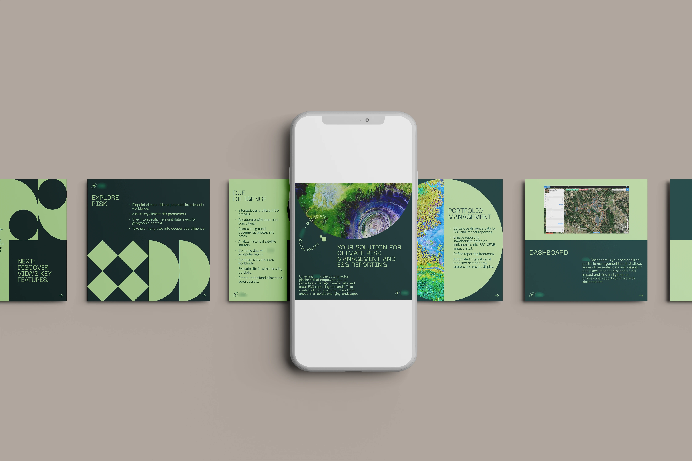
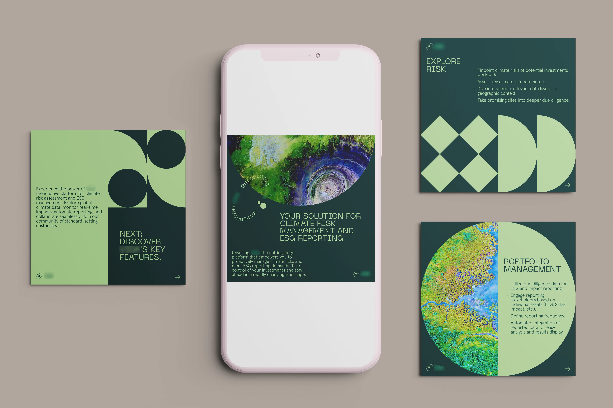
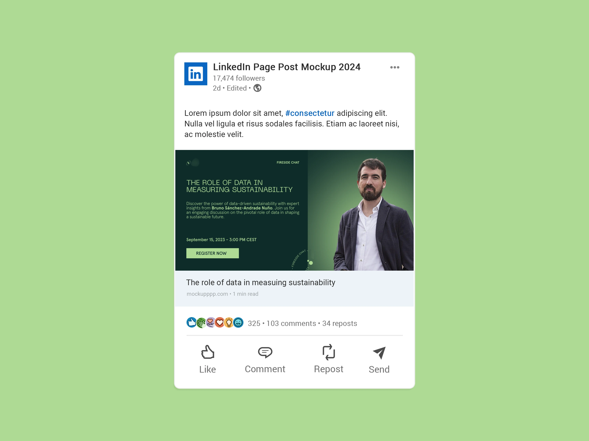

INTRO
The project aimed to create visually impactful content to promote a SaaS platform specialising in satellite data analysis and climate risk assessment, primarily targeting infrastructure investors. The LinkedIn graphics included a promotional carousel and a banner for a live chat with a prominent guest. The goal was to increase brand visibility and communicate the platform’s technological expertise clearly and professionally.
The project aimed to create visually impactful content to promote a SaaS platform specialising in satellite data analysis and climate risk assessment, primarily targeting infrastructure investors. The LinkedIn graphics included a promotional carousel and a banner for a live chat with a prominent guest. The goal was to increase brand visibility and communicate the platform’s technological expertise clearly and professionally.

THE CHALLENGE
The project presented significant challenges, mainly due to the lack of guidelines or a defined brand identity. In the absence of pre-existing visual elements, it was necessary to develop a basic visual identity for the startup, using colours and fonts that represented the brand’s technological and innovative aspects. The choice of palette and typography was crucial in creating a cohesive and modern identity, without straying from the professional and scientific context of the sector.
The project presented significant challenges, mainly due to the lack of guidelines or a defined brand identity. In the absence of pre-existing visual elements, it was necessary to develop a basic visual identity for the startup, using colours and fonts that represented the brand’s technological and innovative aspects. The choice of palette and typography was crucial in creating a cohesive and modern identity, without straying from the professional and scientific context of the sector.

THE SOLUTION
To create an effective visual identity, a palette of two shades of green was selected, symbolising stability and connection to the environmental theme. The font Neue Machina was used for titles, evoking a technological feel, while Aperçu was chosen for text due to its readability and versatility within the SaaS sector. Stock images of satellite data were processed to ensure high quality and visual coherence.
The incorporation of the company logo as a repeated graphic element in various forms, along with geometric figures inspired by technological design, contributed to maintain a consistent visual narrative. Each slide in the carousel was designed to guide the viewer through the key message, concluding with a clear call to action.
To create an effective visual identity, a palette of two shades of green was selected, symbolising stability and connection to the environmental theme. The font Neue Machina was used for titles, evoking a technological feel, while Aperçu was chosen for text due to its readability and versatility within the SaaS sector. Stock images of satellite data were processed to ensure high quality and visual coherence.
The incorporation of the company logo as a repeated graphic element in various forms, along with geometric figures inspired by technological design, contributed to maintain a consistent visual narrative. Each slide in the carousel was designed to guide the viewer through the key message, concluding with a clear call to action.
RESULT
The campaign helped strengthen the brand’s online presence and improve the platform’s visual recognition within the sector. The combination of informative carousels and promotional graphics allowed the services to be presented in a modern and elegant way, conveying the platform’s reliability and its ability to support complex decisions through advanced data. The content was well-received for its ability to translate technical concepts into effective visuals.
The campaign helped strengthen the brand’s online presence and improve the platform’s visual recognition within the sector. The combination of informative carousels and promotional graphics allowed the services to be presented in a modern and elegant way, conveying the platform’s reliability and its ability to support complex decisions through advanced data. The content was well-received for its ability to translate technical concepts into effective visuals.
